Towards
Realistic
Risk & Return Estimates
for Real Estate
Dr. Thies Lindenthal
Photo ©
<h2>Is real estate a good investment?<span class="subtitle"><br />We should know: It’s the world’s largest asset class.</span></h2> * How much investment risk and return can we expect? * How does its risk/return profile compare to other investments? * How much more risky are individual assets? <aside class="notes"> To be able to make better-informed decisions, academia, industry, policymakers and private households should be familiar with real estate’s risk–return profile. After all, real estate accounts for more than half of the total assets of UK households. Still, property investments are often misunderstood as being fundamentally different from more mainstream asset classes such as stocks or bonds. Simplistic advice such as “Buy land, they’re not making it anymore”, attributed to Mark Twain, is typical for a view in which real estate is exceptional: returns exceed a fair compensation for risk. <p>As an applied financial economist, I strive for a realistic estimates of real estate’s risks and returns, both at the market and at the asset level. To do so, I combine theory and data, traditional econometrics and innovative machine learning techniques, dusty archives and big data sensors.</p> </aside>
<h2><span class="transparent70">Economy-wide risks</span><span class="subtitle transparent70"><br />Bank of England Financial Stability Report (<a href="https://www.bankofengland.co.uk/financial-stability-report/2019/december-2019">2019</a>)</span></h2> * <span class="transparent70">“<strong>The housing market can be a key source of risk to UK financial stability</strong>. In the UK, mortgages are households’ largest financial liability and lenders’ largest loan exposure in aggregate. Housing accounts for nearly half of the total assets of UK households. [...] Historically, the rapid build-up of household debt has been a key source of risk to financial and economic stability — and not just in the UK.”</span> <p class='source'><a href="https://www.flickr.com/photos/croydonclicker/51181061000">Photo ©</a></p> Notes: * The global financial crisis of 2008/2009 has highlighted the pivotal role of real estate in our economy and financial system once more. * The sheer size of the asset class dominates national accounts and household-level balance sheets alike, both in terms of assets and liabilities. A large section in the Bank of England’s 2019 Financial Stability Report is devoted to real estate, modelling how the housing market can be a key source of risk to UK financial stability. * Drops in residential and commercial real estate prices, for instance, were an explicit component of the stress test scenarios imposed on UK banks</p>.
<h2>Just an alternative?<span class="subtitle"><br />Real estate is a sizeable component of institutional portfolios</span></h2> * Sovereign wealth funds, insurance companies, pension funds - “Our” pension scheme USS holds £4.3 billion of private RE, for instance.
<h2><span class="darkonlight">Households</span><span class="darkonlight"></span><span class="darkonlight subtitle"><br />...face the same challenge as sophisticated professional investors.</span></h2> <ul> <li><span class="darkonlight">3 BR late Victorian terraced house in East Cambridge. Sold for almost £0.5 million in August 2019.</span></li> <li><span class="darkonlight">How much return can the new owners expect?</span></li> <li><span class="darkonlight">How much risk do they face?</span></li> </ul> Notes: * Estimating the risk and return of real estate remains a real challenge. It's a challenge because it's very difficult to do and it's real because it affects not only sophisticated big investors, but also normal households. * To give you an example here, imagine this 3 bedroom late Victorian terraced house in East Cambridge that sold for almost half a million pounds in August 2019. If you think about this particular building, how much return can the new owners expect over the coming years and how much risk do they face? * Questions like these are a lot more difficult to answer for real estate than for other asset classes – or for individual assets than for – let's say – shares of a company. * One of the good things about being a researcher on real estate is that it is easy to talk about your research to other people. Most people have an opinon on the housing market and they are really keen to share their views. Unfortunately, however, many of the broadly held beliefs are not supported by evidence. I have stopped telling people at parties that real estate is not the great investment they believe it is. It is never good to be that killjoy at a party. Still all the evidence points towards real estate being a fair investment, yes, but most definitely NOT an exceptionally good one. And no, investments into bricks and mortar are not low-risk.
## Academia to the rescue?<span class="subtitle"><br>Broad literature, surprisingly few answers. Data are scarce.</span> * **A risk premium puzzle?** - “Arguably the most surprising result of our study is that long-run returns on housing and equity look remarkably similar. <mark>Yet while returns are comparable, residential real estate is less volatile on a national level, opening up new and interesting risk premium puzzles.</mark>” <br /><br/>*The Rate of Return on Everything, 1870–2015* (<a href="https://academic.oup.com/qje/article/134/3/1225/5435538">Jordà et al., QJE 2019</a>)
## Better data!<span class="subtitle"><br/>“The Total Return and Risk to Residential Real Estate” <br/>(<a href="https://academic.oup.com/rfs/advance-article/doi/10.1093/rfs/hhab042/6222230">Eichholtz, Korevaar, Lindenthal, Tallec, RFS 2021</a>)</span> * Asset-level total return: Rents, costs, taxes, prices for residential RE in Paris (1809–1943) and Amsterdam (1900–1979) <img src="imgs/totalreturn_amsparis.png" height=330>
## "Normal" Sharpe Ratios<span class="subtitle"><br/>Asset-level total returns (<a href="https://papers.ssrn.com/sol3/papers.cfm?abstract_id=3549278">Eichholtz, Korevaar, Lindenthal, Tallec</a>)</span> * Paris (1809–1943) and Amsterdam (1900–1979) 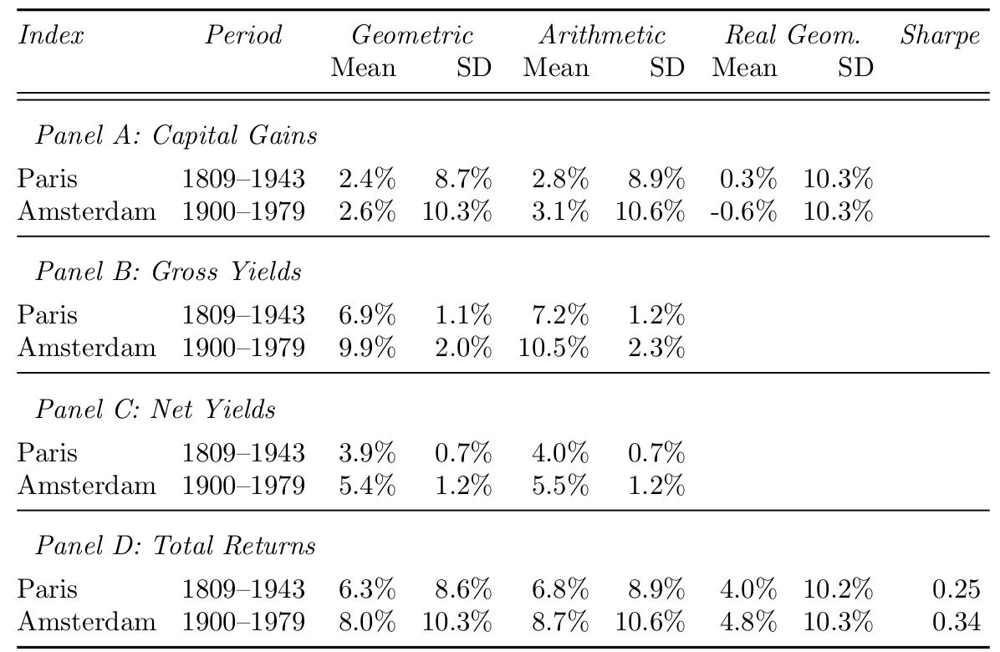
## Commercial Real Estate<span class="subtitle"><br/>Total returns dominated by income, not capital gains.</span> * City of London, 1920–2010<br>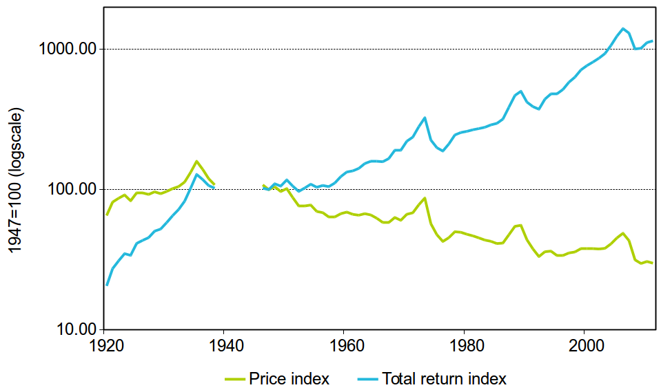 <p class="source">Source: Scott (1996); MSCI/IPD</p>
<h2>Realistic Rent Expectations<span class="subtitle"><br /> “Growth and Predictability of Urban Housing Rents” </span></h2> * New working paper with Piet Eichholtz and Matthijs Korevaar - Currently under review at JEEA * **Core question: How risky are rental income streams?**
<h2><span class="transparent70">Reliable Micro-Data</span> <span class="subtitle transparent70"><br />Rent records of institutional investors, from 1500–2020</span></h2> * <span class="transparent70">Amsterdam, Antwerp, Bruges, Brussels, Ghent, London, and Paris</span> * <span class="transparent70">436,000 rental cash flow observations</span> * <span class="transparent70">Repeat observation indices: Same methodology in all cities, quality-adjusted.</span>
<h2>Half a millennium <span class="subtitle"><br />500 years of Western European economic history</span></h2> * Rent indices (nominal) for 7 cities 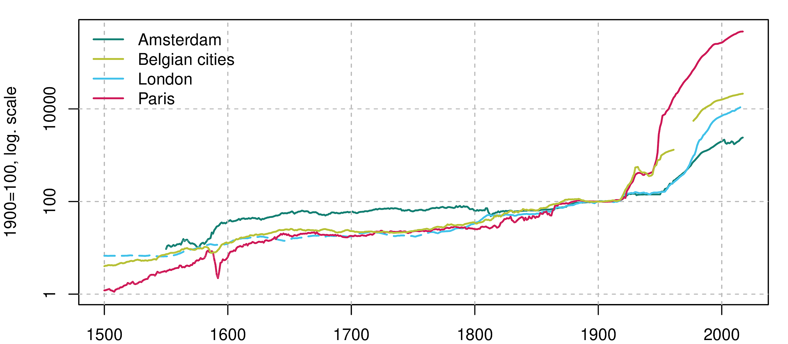
<h2> Real Rents<span class="subtitle"><br />Inflation is a relatively modern phenomenon</span></h2> * Rents deflated with a general consumer price index 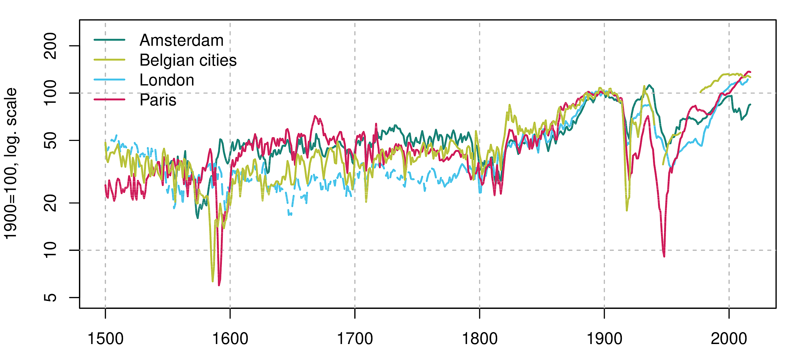 Notes:
<h2>Rents are a sensor<span class="subtitle"><br />... of a city's fortune</span></h2> * Disasters: Sack of Antwerp ("Spanish Fury"), 1576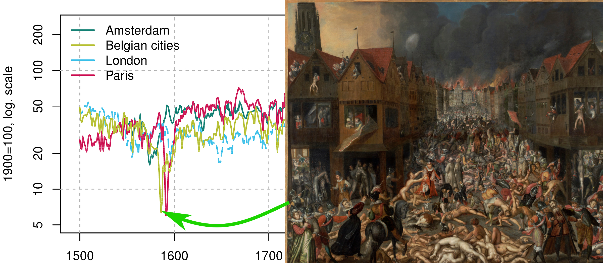 Notes:
<h2>War & regulation<span class="subtitle"><br />Another disaster: Siege of Paris, 1590 </span></h2> * First example of rent control in our sample.<img src='imgs/index_real_paris.png'> Notes:
<h2>Shared trends<span class="subtitle"><br />Centuries of stability, followed by fundamental change</span></h2> * Rents doubled during the industrial revolution 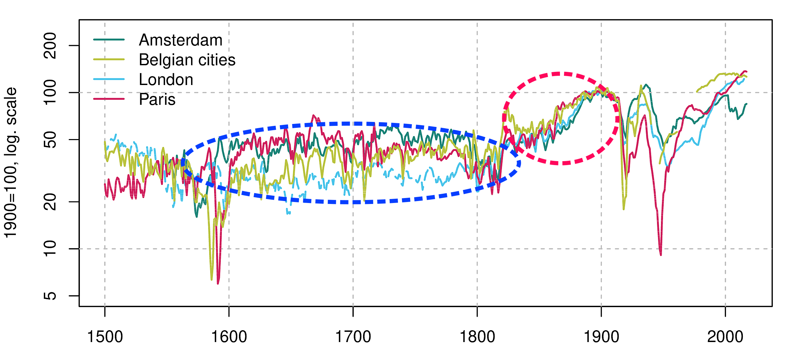 Notes:
<h2> Long-term rents: growth<span class="subtitle"><br />Annual growth, 500-year average: 0.12–0.30%.</span></h2> * Modest growth ($\mu$), despite rapid urbanisation 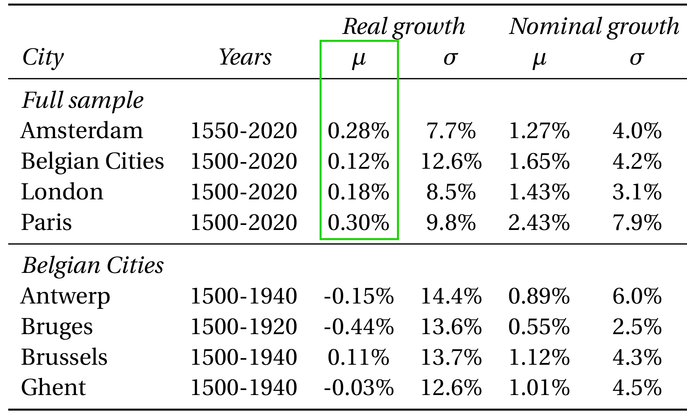 Notes:
<h2> Long-term rents: risk<span class="subtitle"><br />Modest growth ($\mu$), substantial risk ($\sigma$)</span></h2> * $\sigma$ of 8–13% (total returns are roughly 4–5%) 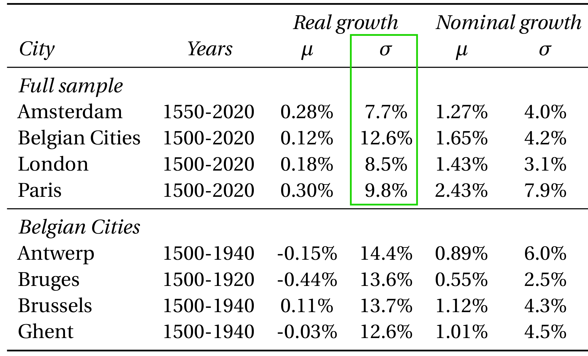 Notes:
<h2> Superstar bias?<span class="subtitle"><br />In 1500, the Belgian cities were the stars. Not London or Paris.</span></h2> * Don't focus on the successful survivors, only 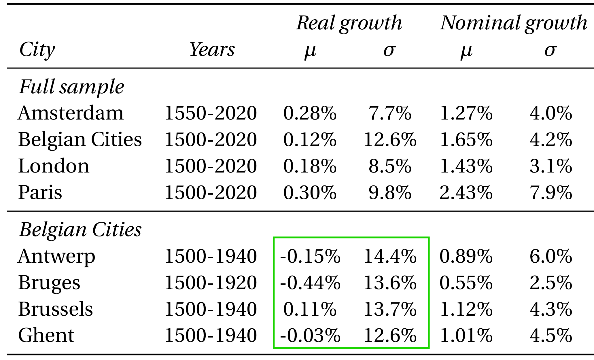 Notes:
<h2> Market-wide predictability <span class="subtitle"><br />Can we predict rents with economic fundamentals?</span></h2> * Population growth is linked to economy and housing demand.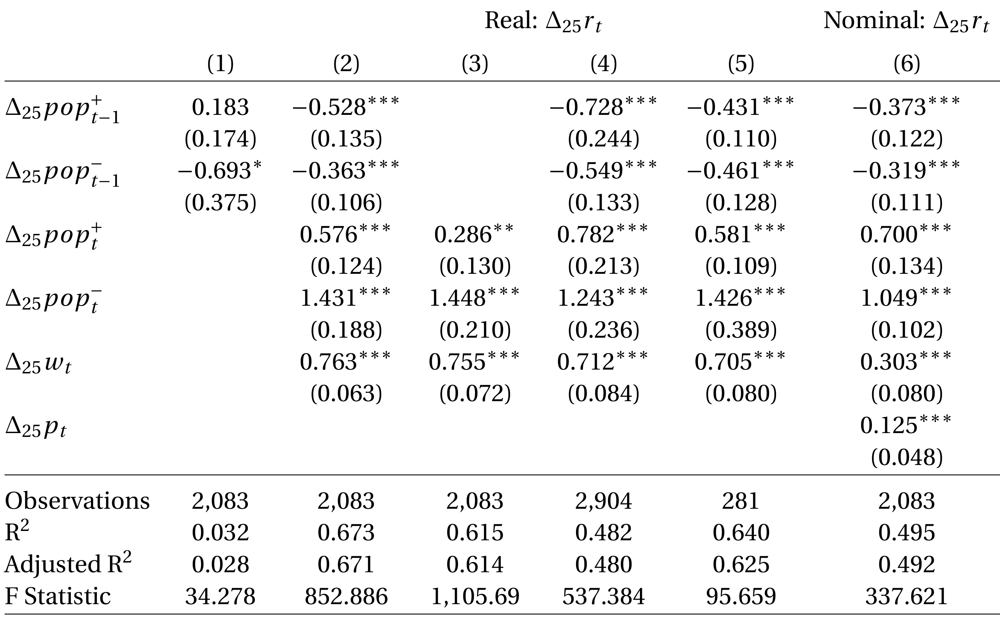 * `$ \tiny \Delta_{25} r_{it} = \mu_i + \beta_1 \Delta^+_{25} pop_{i,t-1} +\beta_2 \Delta^-_{25} pop_{i,t-1} + \gamma_1 \Delta^+_{25} pop_{i,t} + \gamma_2 \Delta^-_{25} pop_{i,t} + \gamma_3 \Delta_{25} w_{it} + \varepsilon_{i,t} $` Notes: * Next we test for predictability at the market level and try to predict rents with economic fundamentals. * We tried wages, prices,
<h2> Market-wide predictability <span class="subtitle"><br />Past population changes do not explain rents well</span></h2> * Coefficients are not significant. Model has hardly any predictive power. 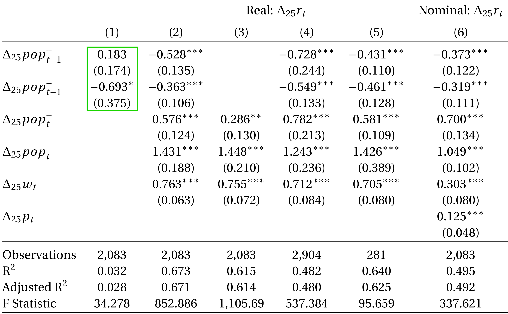 * `$ \tiny \Delta_{25} r_{it} = \mu_i + \beta_1 \Delta^+_{25} pop_{i,t-1} +\beta_2 \Delta^-_{25} pop_{i,t-1} + \gamma_1 \Delta^+_{25} pop_{i,t} + \gamma_2 \Delta^-_{25} pop_{i,t} + \gamma_3 \Delta_{25} w_{it} + \varepsilon_{i,t} $` Notes:
<h2> Market-wide predictability <span class="subtitle"><br />Current economic fundamentals determine rents</span></h2> * Rents are strongly linked to population changes and wages 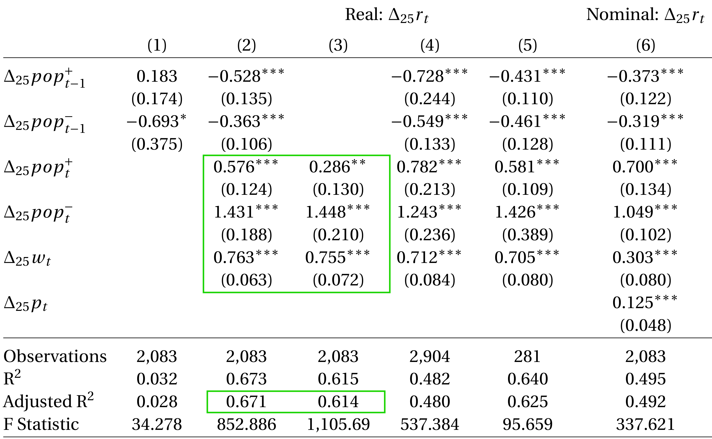 * `$ \tiny \Delta_{25} r_{it} = \mu_i + \beta_1 \Delta^+_{25} pop_{i,t-1} +\beta_2 \Delta^-_{25} pop_{i,t-1} + \gamma_1 \Delta^+_{25} pop_{i,t} + \gamma_2 \Delta^-_{25} pop_{i,t} + \gamma_3 \Delta_{25} w_{it} + \varepsilon_{i,t} $` Notes:
<h2>Any economic relevance?<span class="subtitle"><br />If there is predictability, can market participants act upon it?</span></h2> * Yes! - Term-structure of rents in Paris: contracts are typically for 3, 6 or 9 years - We compare the agreed annual rents for short-term contracts to longer-term leases - Without predictability, we should observe no differences (beyond a general premium/discount for longer durations) * Tenants and landlords successfully predict future rents and negotiate rental contracts accordingly.
<h2>Asset-Level Risk<span class="subtitle"><br />Tenants rent single units, not an index.</span></h2> * Landlords cannot fully diversify. How much idiosyncratic income risk do they face? * Excess growth rate $\Delta_e$ is the difference between the rental growth rate at the asset- and at the market level. * $\Delta_e$ is large: 0.093 in absolute terms. 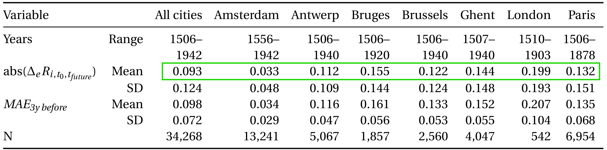 Notes:
<h2>Asset-Level Risk<span class="subtitle"><br />Modelling the deviations from the city-wide trends</span></h2> * `$ \tiny abs(\Delta_e R_{i, t_0, t_{\textit{future}}}) = \alpha + \beta_1 abs(\Delta_e R_{i, t_{\textit{past}, t_0}}) + \beta_2 \textit{MAE}_{i, -3y} + \beta_3 abs(\Delta_e R_{i, t_{\textit{past}, t_0}})\times\textit{MAE}_{i, -3y}+\epsilon_{i,t_0} $` * We try to predict growth in excess of the market 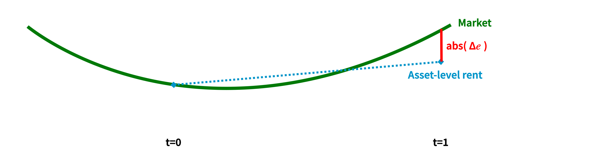 Notes:
<h2>Asset-Level Risk<span class="subtitle"><br />Modelling the deviations from the city-wide trends</span></h2> * `$ \tiny abs(\Delta_e R_{i, t_0, t_{\textit{future}}}) = \alpha + \beta_1 abs(\Delta_e R_{i, t_{\textit{past}, t_0}}) + \beta_2 \textit{MAE}_{i, -3y} + \beta_3 abs(\Delta_e R_{i, t_{\textit{past}, t_0}})\times\textit{MAE}_{i, -3y}+\epsilon_{i,t_0} $` * explanatory variables: past excess growth + market-wide uncertainty 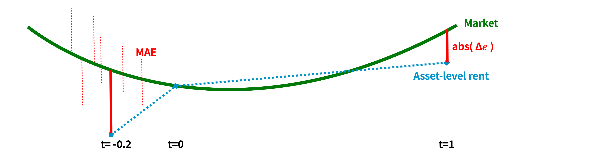 Notes:
<h2>Risky assets and risky times<span class="subtitle"><br />Persistence in excess growth: Long-lived out-/underperformance </span></h2> * Only a third (0.317) of previous deviations get corrected at rent revision. 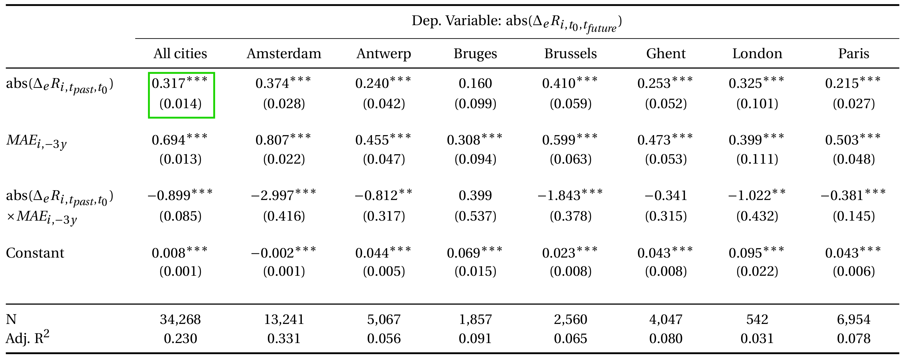 Notes:
<h2>Risky assets and risky times<span class="subtitle"><br />Persistence in market uncertainty</span></h2> * Large deviations at *other* homes increase excess future rent growth (0.694) 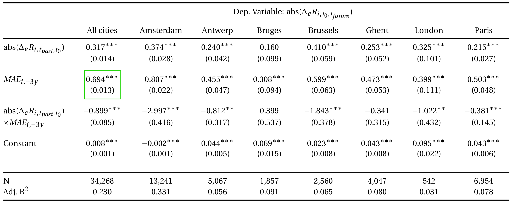 Notes:
<h2>Risky assets and risky times<span class="subtitle"><br />In volatile years, all homes experience idiosyncratic risk.</span></h2> * Low-risk properties are safe in good times only. 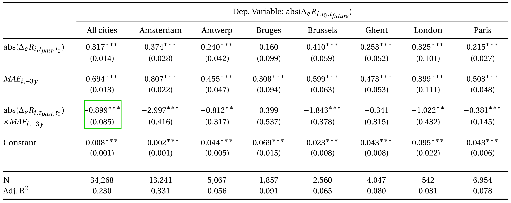 Notes:
<h2>Summing up<span class="subtitle"><br />Rents are key when evaluating real estate investments</span></h2> * Long-term rent indices are a powerful indicator of the success of cities * Real rental growth rates have been lower than previously assumed - Asset pricing implications: e.g., Gordon growth model * Volatility in rents is high: Lower Sharpe ratios for RE * Predictability both at the market and the asset level can reduce risk. Notes:
<h2>Next steps<span class="subtitle"><br />Interdisciplinary work in three main directions</span></h2> 1. More data, especially on commercial real estate 2. Richer data: 3D models (Lindenthal, REE 2020), remote sensors (Lindenthal, 2017), street-level images (Lindenthal & Johnson, JREFE 2021), dynamic preferences (Lindenthal, Schmidt & Wan, hopefully soon) 3. New empirical approaches to analyse these data: applied ML, spatial ANN (Clapp & Lindenthal, JHE R&R) Notes:
<h2>Q & A<span class="subtitle"><br />Surely, there are questions?</span></h2> <p> </p> <p> </p> <p> </p> <p> </p> <p><span class='source'><a href="https://www.flickr.com/photos/vic_206/37365289430">Photo ©</a></span></p> Notes: